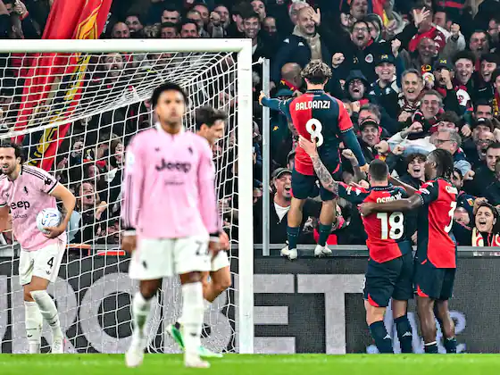

昨晚意甲多场爆冷。AC米兰主场2-4不敌博洛尼亚，A·西塞的梅开二度一度帮助AC米兰2-1逆转，但穆班古拉的帽子戏法和AC米兰的乌龙大礼，让博洛尼亚客场拿走3分，取得客场3连胜。

另一场意甲，尤文客场0-2不敌热那亚，巴尔丹齐传射建功，立下大功。热那亚迎来主场4连胜，同时结束了对尤文的交锋4连败。昨天宝哥已经预测到本场比赛会有冷门。

今天继续关注意甲场次，排名第19的佛罗伦萨主场迎战第12名的亚特兰大。本赛季亚特兰大双线作战，表现和上赛季有很大不同。欧协杯亚特兰大1胜1负，意甲也是3胜1平3负。更值得关注的是，亚特兰大最近4个客场均输球。佛罗伦萨上轮客场1-2不敌国米，遭遇3连败。但本场比赛，机构多为平半中水，似乎对主场作战的佛罗伦萨信心不错。
已经打完的英联杯第3轮，让球一方仅两队赢球，似乎成了冷门温床，阿森纳被英乙球队福利特淘汰，曼城主场也是依靠点球才淘汰了布莱顿晋级。今晚是英联杯最后一场，埃弗顿主场迎战纽卡斯尔。两队一个10分，一个11分，看似实力较强的纽卡斯表现不稳，曾客场1-4惨败给考文垂和利兹联。这次又是大家重视程度不够的英联杯，我认为纽卡斯尔客场不宜高看。
欢迎大家收藏宝哥首页，请分享给好友或转发到朋友圈，让更多人看到我。
安卓用户可以下载APP，更便捷看到宝哥每天的动态！